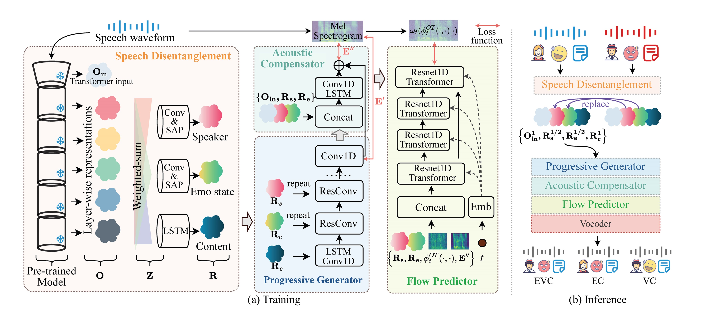

A Controllable Emotion Voice Conversion Framework with Pre-trained Speech Representations
Abstract. Speech disentanglement is crucial for tasks like controllable speech synthesis, voice conversion, and speech emotion conversion. While many self-supervised or weak supervised speech pre-trained models have shown remarkable performance in speech recognition and speaker identification, their potential for speech disentanglement remains underexplored. Typically, speech pre-trained models used in speech synthesis focus on extracting strong task-specific representations, often overlooking their capacity for speech disentanglement in controllable speech generation. To address this gap, we propose a four-stage decoder model that integrates a speech disentanglement module, progressive generator, acoustic compensator, and flow predictor, leveraging the layer-wise task characteristics of pre-trained models and enabling controllable emotion and voice conversion with any pre-trained speech encoder. We evaluate this framework using six established speech pre-trained models, and experimental results demonstrate that several pre-trained models significantly outperform baseline methods within our framework on emotion and voice conversion. Moreover, our framework serves as a valuable benchmark for evaluating pre-trained models' capabilities in disentangling emotional state, speaker, and content from speech. We also release our code at https://github.com/wangtianrui/PM-EVC.
Model Overview
Our four-stage emotional voice conversion framework, trained on self-supervised mel-spectrogram reconstruction, enables emotion and voice conversion (EVC), emotion conversion (EC), and voice conversion (VC) by altering emotional state or speaker representation during inference.
Voice Conversion
Our framework employs ProgRE as the pre-trained model, enabling stable voice conversion while preserving the original emotional state.
| 24-layer Pre-trained Model Under Our Framework | Baseline methods | |||||||||
|---|---|---|---|---|---|---|---|---|---|---|
| Source Speech | Target Speaker | ProgRE | Data2vec | HuBERT | Wav2vec2.0 | WavLM | Whisper | ConsistencyVC | Wav2vec-VC | |
| Same emotion between source and target |
||||||||||
| Different emotion between source and target |
||||||||||
Emotion Conversion
Our framework employs ProgRE as the pre-trained model, enabling stable global emotion state conversion while preserving the original speaker identification.
Please note that our emotional state is at utterance level and does not affect speech duration. Instead, it is primarily reflected in stress and pitch variations.
| 24-layer Pre-trained Model Under Our Framework | Baseline methods | |||||||||
|---|---|---|---|---|---|---|---|---|---|---|
| Source Speech | Target Emotion | ProgRE | Data2vec | HuBERT | Wav2vec2.0 | WavLM | Whisper | ConsistencyVC | Wav2vec-VC | |
| Same speaker between source and target |
||||||||||
| Different speaker between source and target |
||||||||||
Emotion and Voice Conversion
Our framework enables simultaneous conversion of emotion and speaker, with the emotion and speaker originating from different speech samples.
| 24-layer Pre-trained Model Under Our Framework | Baseline methods | ||||||||||
|---|---|---|---|---|---|---|---|---|---|---|---|
| Source Speech | Target Emotion | Target Speaker | ProgRE | Data2vec | HuBERT | Wav2vec2.0 | WavLM | Whisper | ConsistencyVC | Wav2vec-VC | |
| Same target of emotion and speaker |
|||||||||||
| Different target of emotion and speaker |
Can't control emotion and speaker from different speech
Emotion Target
Speaker Target
|
||||||||||
Reconstruction
Our framework reliably reconstructs high-quality speech based on intermediate representations. This allows for the integration of vector quantization to encode the content and the Transformer encoder's input, both of which are frame-level representations, enabling controllable speech synthesis.
| 24-layer Pre-trained Model Under Our Framework | Baseline methods | |||||||
|---|---|---|---|---|---|---|---|---|
| Source Speech | ProgRE | Data2vec | HuBERT | Wav2vec2.0 | WavLM | Whisper | ConsistencyVC | Wav2vec-VC |
Performance of Flow Predictor
Despite the improvements in speech quality, the randomness and artifacts introduced during inference reduce the accuracy of speech recognition models. We believe this reflects a limitation of the evaluation method rather than a flaw in the generation process.
Benefits of Flow Predictor:
- In the results with Flow predictor, the acoustic structure (harmonics) of the speech is more complete.
- The result with Flow predictor makes the speech sound less mechanical.
- In summary, Flow Predictor can significantly improve the perceptual quality of speech.
We speculate that the main reason for the decline in speech recognition and other indicators measured by deep learning models is that the artificial artifacts and randomness come from the inference process of the flow predictor.
| without Flow Predictor | with Flow Predictor |
|---|---|
 lab: THAT IS ALL I GOT TO SAY ON THAT I AM TIRED OF IT IT IS IRRITATING IT IS VERY CORNY TO ME rec: THAT IS ALL I GOT TO SAY ON THAT I AM TIRED OF IT IT IS IRRITATING IT IS VERY CORNY TO ME WER by Whisper Large V3: 0.0% |
 lab: THAT IS ALL I GOT TO SAY ON THAT I AM TIRED OF IT IT IS IRRITATING IT IS VERY CORNY TO ME rec: THAT IS ALL THAT IS ON I AM TIRED OF IT IT IS IRRITATING IT IS VERY CORNY TO ME WER by Whisper Large V3: 21.74 % |
| without Flow Predictor | with Flow Predictor |
|---|---|
 lab: THOSE MUSICIANS HARMONIZE MARVELOUSLY rec: THOSE MUSICIANS HARMONIZE MARVELOUSLY WER by Whisper Large V3: 0.0% |
 lab: THOSE MUSICIANS HARMONIZE MARVELOUSLY rec: THOSE MUSICIANS HARMONIZE MERRILY WER by Whisper Large V3: 25.0% |
Ablation Study
Due to space limitations, Table III in the paper only presents the results of the last column, Average. To eliminate any potential misunderstanding for readers, we provide here the complete results for all four tasks. Please note that the structure of our generation module is designed to better utilize the information extracted by the pre-trained disentanglement module, enabling the generation of controllable, high-quality speech. The ability to disentangle speech characteristics is what we aim to evaluate, and we expect this capability to reside in the pre-trained model itself, rather than being the goal of the generation module.
- As seen from the last two rows, the progressive generation consistently improves the performance across ERS, SS, and WER.
- A comparison between the first and second rows reveals that the Acoustic Compensator effectively enhances audio quality (DNSMos) and significantly improves the quality of speech reconstruction. Without the Acoustic Compensator, all metrics in the reconstruction task decrease substantially. In the EC, VC, and EVC tasks, it noticeably reduces the WER and enhances the DNSMos, although with a slight decrease in ERS and SS. We believe that this minor sacrifice in conversion characteristics is worthwhile, as it results in higher audio quality and stronger reconstruction capabilities. Furthermore, the first row's performance shows significant improvement compared to two baselines in Table I.
- A comparison between the first and third rows demonstrates that the Flow Predictor significantly enhances audio quality (average DNSMos significantly improves from 2.84 to 3.03). Although this improvement comes with a decline in other metrics, human auditory evaluations suggest that the Flow Predictor introduces distortions imperceptible to the human ear. These distortions, however, negatively impact the performance of evaluation metrics based on deep learning models. For a detailed discussion, please refer to the previous analysis in this page. We consider this a limitation of the evaluation metrics rather than a critical issue of our method. Since high-quality audio for human listeners is the ultimate goal in tasks such as voice conversion and TTS, we opted to include the Flow Predictor, despite its adverse effects on ERS, SS, and WER metrics.
| Name | EC | VC | EVC | Reconstruction | Average | |||||||||||||||
|---|---|---|---|---|---|---|---|---|---|---|---|---|---|---|---|---|---|---|---|---|
| ERS | SS | WER | DNS | ERS | SS | WER | DNS | ERS | SS | WER | DNS | ERS | SS | WER | DNS | ERS | SS | WER | DNS | |
| whole framework (24-layer ProgRE) | 68.03 | 72.49 | 4.57 | 3.13 | 94.02 | 67.95 | 4.02 | 3.05 | 68.99 | 69.17 | 5.21 | 2.89 | 95.91 | 86.85 | 4.21 | 3.04 | 81.74 | 74.12 | 4.50 | 3.03 |
| - Acoustic Compensator (Comp) | 69.10 | 73.26 | 5.18 | 3.00 | 93.95 | 69.13 | 4.99 | 2.95 | 70.43 | 72.44 | 5.68 | 2.84 | 93.38 | 82.24 | 6.25 | 2.95 | 81.72 | 74.27 | 5.53 | 2.93 |
| - FlowPredictor (Flow) | 69.23 | 72.61 | 2.20 | 2.98 | 93.72 | 70.68 | 2.51 | 2.80 | 69.24 | 72.28 | 2.39 | 2.58 | 96.24 | 87.06 | 2.00 | 3.01 | 82.11 | 75.66 | 2.28 | 2.84 |
| - Flow - Comp | 70.94 | 73.99 | 2.47 | 2.95 | 94.04 | 71.82 | 2.74 | 2.76 | 70.52 | 72.85 | 2.61 | 2.54 | 92.87 | 83.69 | 3.71 | 2.89 | 82.09 | 75.59 | 2.88 | 2.79 |
| - Flow - Comp - Progressive (in generator) | 70.14 | 73.46 | 2.59 | 2.96 | 93.97 | 71.01 | 2.81 | 2.77 | 69.72 | 72.66 | 2.77 | 2.55 | 93.68 | 83.44 | 3.86 | 2.90 | 81.88 | 75.14 | 3.01 | 2.80 |